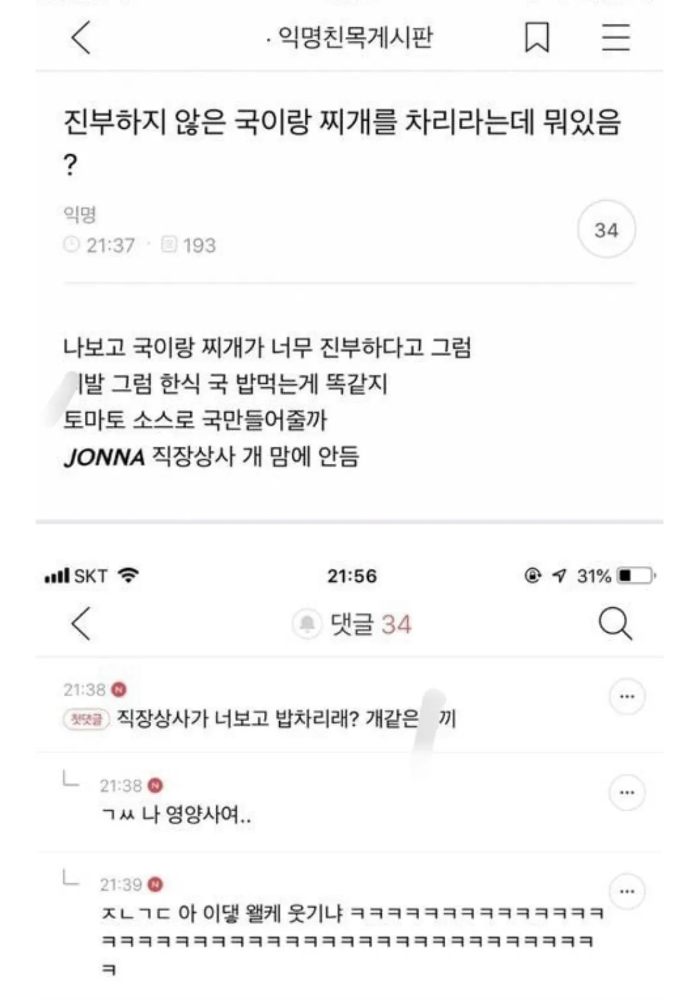

국이랑 찌개 진부하다고 한 이야기 들음.jpg
댓글
로제마라 부대찌개랑 토마토바질페스토까망베르 김치찌개는 먹을만 할 것 같은데.
냉면밥 ㄱㄱ
냉반은 맛있긴해
오이해물탕
사과주스 동태찌개면
미역국에 사과주스 넣은 취사병 조ㅇㅁ 이새끼 여기있었구나
나 취사병출신 아님! 아무튼 나 아님
알토란 보고 참고ㄱ
그리고 수상하게 잔반이 늘어나버림
알토란 식단 일주일 겪고나면 다시는 저런 불평 안하게 될지도ㅋㅋㅋ
ㄹㅇ
진부하지 않은 요리는 알토란을 보면된다ㅋㅋㅋㅋㅋ
진부하지 않은 국이랑 찌개가 뭘까 아이디어라도 주던가 ㅋㅋ
바질크림삼계탕
고기가 적었나?
진부하지 않은 한식은 셰프가 차려야지 ㅋㅋㅋㅋ
막상 한식 다이닝 가도 창의적인 한식은 크게 없다던데
아냐 진부하지않은 한식 근처 구내식당에서 종종 나오는데
시발 이건 나오면 안되는 한식이다 싶은게 많음..
동료들 밥먹다가 다 이건 돈아깝다는 소리 진부하지 않은식단일때 80%이상 나옴
로제 미역국
토마토 스프 의외로 밥이랑 먹을만 함
하르초 완전 때지국밥맛 밥도둑
된장국 만해도 시레기/두부/다시마/보리새우/멸치/근대/고구마순/달래 등 종류가 ㅈㄴ 많은데....
김치찌개도 돼지고기/소고기/참치/꽁치/고등어 등 있고
된장찌개가 되면 또 수도없이 나오는데 김치국도 그렇고
이런거 다 진부하다고 할거 같아서 할말은 없긴 하네
먹어봄. 진부함.
식당에선 매번 베이스 조미료가 비슷해서 결국 비슷한 맛이 날수밖에 없더라
가지마라탕끓여서 기강한번잡아야 정신차린다
꽁치덮밥 꽁치되장찌개 꽁치곰탕 꽁치파르페 꽁바스 꽁치스테이크
민트초코 된장찌개라도 끓여야하나?
나이 먹고 보니까 오징어무국 감자국 된장국(시래기,배추,아욱,쑥 등등) 이런거랑 밥먹는게 진짜 좋아짐..
토마토 마녀수프
연포탕
감자짜글이
이런거 정도면 덜 진부할까
미역국 먹구싶다
수르스트뤠밍 찌개 끓이셈
준비물
방독면
수르스트뤠밍
된장
문을 밖에서 걸어 잠글 수 있는 쇠사슬과 자물쇠
* 실행 1시간전 환풍기를 망가뜨릴 것
김치찌개에 파인애플넣어
민트초코김치찌개
나는 갠적으로 급식에 나오던 참치추어탕 좋아해
저렇게 갈군다고 해서 잘해주면 안됨 그러면 그후부터 계속 창의적인거 요구함 ㅋㅋ
난 국거리 고민하는게 힘들어서
회사 식당표 저번주꺼 보고 따라 만드는데 ㅋㅋ
존나 다채로움
오늘은 오징어무국해야하는 날임
까망베르청국장 고수부추전
근데 단체 급식이 진부하지 않아야 할 이유가 있는건가....? ㅋㅋㅋㅋㅋㅋㅋㅋㅋㅋㅋㅋㅋㅋ
똠양꿍 생각이 나네.ㅋㅋ
단체급식은 단일코너라면 무조건 호불호없는 진부한 메뉴가 최고임.
갑자기 호불호 있는 메뉴나가는날엔 뒤지게 욕먹고 잔반 버리느라 개고생함
대기업 구내식당은 메뉴가 한끼에 3개 이상이더라 부러웠음.
민트초코동태탕
쟈스민시락국
얼큰토마토된장찌개
참신한거 찾다가 결식하려고..
진부하지 않은 국이나 찌개는 얼마든지 있음. 참신한 레시피? 외국 로컬 요리들 참고해서 스까 만들면 됨
근데 진부하지 않은 참신한 요리가 대중에게 먹히나? 그게 잘 먹혔으면 그건 진작에 널리 퍼져서 진부한 요리가 되었을 거임
그러니까 쉽지 않지 ㅋㅋㅋ
내가 계속 비슷한 거 먹는 거 싫어해서 국탕류 국물요리에 레몬 라임이나 허브류나 화자오 라조장 토마토페이스트 여튼 벼라별 것들 다 집어넣어서 해먹는데 이것저것 외도하다 보면 다시 흔해빠진 레시피로 돌아옴. 그게 제일 무난하고 맛있으니까......
민트된장찌개
토마토바질김치찌개
로즈마리부대찌개